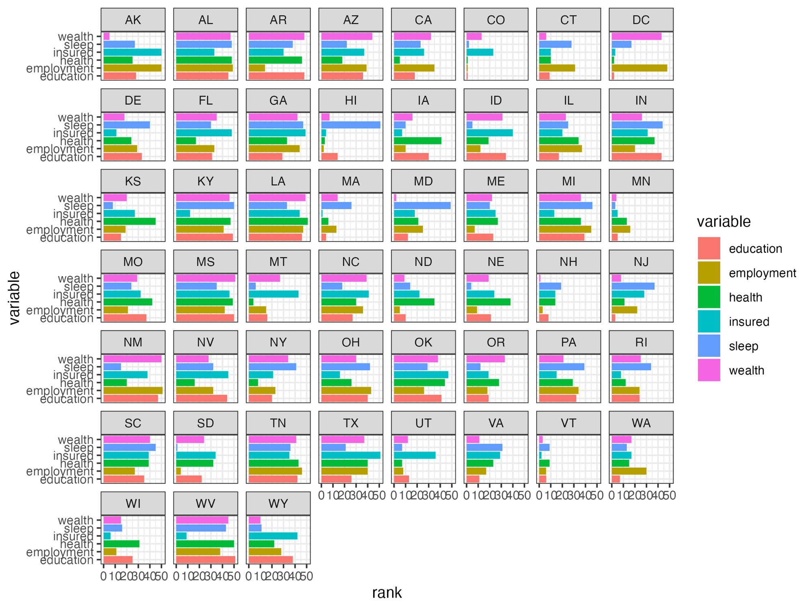
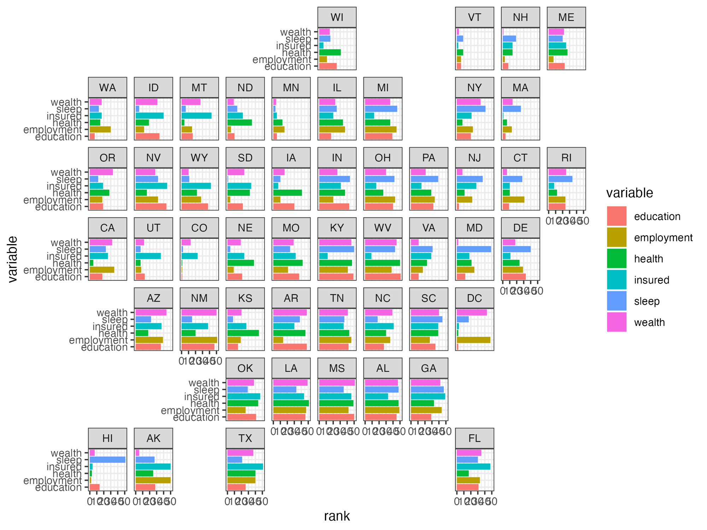
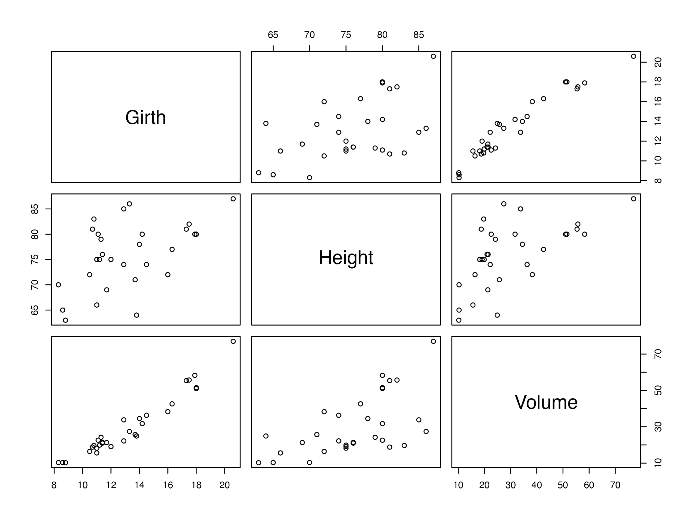

Capture plots from other devices with record_polaroid()
Source:vignettes/record_polaroid.Rmd
record_polaroid.Rmdcamcorder overrides functions like
print.ggplot or print.patchwork to capture
plots. In some cases though, when other functions are used to print
plots, camcorder cannot automatically grab them.
record_polaroid() provides a way to expand the capturing
capabilities of camcorder to other devices.
This can be achieved by adding record_polaroid() after
the code used for plotting. Although record_polaroid() has
to be called manually, it allows saving a plot with the settings of an
existing camcorder setup, like width, height, or
directory.
This is particularly useful when you have an ongoing recording of ggplot2 code and then start using a package that has its own printing function, like geofacet.
Example with {geofacet}
In this example, we only use the state_ranks dataset
from geofacet but no functions from the package. Our
basic camcorder setup works as expected.
library(ggplot2)
library(geofacet)
library(camcorder)
gg_record(device = "png", width = 8, height = 6)
ggplot(state_ranks) +
geom_col(aes(variable, rank, fill = variable)) +
coord_flip() +
facet_wrap(vars(state)) +
theme_bw()
If we were to replace the facet_wrap() function with
facet_geo() though, no plot would be saved, since
geofacet uses its own printing function. This is where
record_polaroid() comes in. By adding it (no arguments
needed), camcorder saves the plot in the same directory
and with the same dimensions.
library(ggplot2)
library(geofacet)
library(camcorder)
gg_record(
dir = file.path(tempdir(), "recording"),
device = "png",
width = 8,
height = 6
)
ggplot(state_ranks) +
geom_col(aes(variable, rank, fill = variable)) +
coord_flip() +
facet_geo(vars(state)) +
theme_bw()
record_polaroid()
Example with base R
record_polaroid() can be used with base R plots as well.
Not only does it saves the plot but it also displays the image in
RStudio’s Viewer pane with the desired dimensions declared in
gg_record().
library(camcorder)
gg_record(
dir = file.path(tempdir(), "recording"),
device = "png",
width = 8,
height = 6
)
plot(trees)
record_polaroid()